<title>c1 Teardown Shot List</title>
<meta name="claude:viewport-fit-sides" content="cover">
<link rel="stylesheet" href="https://fonts.googleapis.com/css2?family=IBM+Plex+Sans+Condensed:wght@500;700&family=IBM+Plex+Sans:wght@400;600&family=IBM+Plex+Mono:wght@400;600&display=swap">
<style>
/* Layout: one narrow bench column, steps in teardown order, each shot a tickable row */
:root{
  --bg:#f3f5f4; --panel:#ffffff; --fg:#1b2420; --muted:#5a6762; --line:#d5dcd9;
  --mask:#2f6b4f; --copper:#b5652b; --warn:#a8321e; --tick:#2f6b4f;
  --display:"IBM Plex Sans Condensed","Arial Narrow",system-ui,sans-serif;
  --body:"IBM Plex Sans",system-ui,sans-serif; --mono:"IBM Plex Mono",ui-monospace,monospace;
}
@media (prefers-color-scheme:dark){:root:not([data-theme="light"]){
  --bg:#121816; --panel:#1a2320; --fg:#e3ebe7; --muted:#9aa9a3; --line:#2c3a35;
  --mask:#6fbf96; --copper:#e0935a; --warn:#ff8a73; --tick:#6fbf96; color-scheme:dark}}
:root[data-theme="dark"]{
  --bg:#121816; --panel:#1a2320; --fg:#e3ebe7; --muted:#9aa9a3; --line:#2c3a35;
  --mask:#6fbf96; --copper:#e0935a; --warn:#ff8a73; --tick:#6fbf96; color-scheme:dark}
body{background:var(--bg);color:var(--fg);font:15px/1.55 var(--body);
  padding-left:max(16px,env(safe-area-inset-left,0px));padding-right:max(16px,env(safe-area-inset-right,0px));padding-block:24px 64px}
main{max-width:720px;margin:0 auto;display:grid;gap:28px}
h1,h2,h3{font-family:var(--display);text-wrap:balance;margin:0;line-height:1.15}
h1{font-size:2rem} h2{font-size:1.35rem;color:var(--mask)} h3{font-size:1.05rem}
.eyebrow{font:600 .75rem var(--mono);letter-spacing:.08em;text-transform:uppercase;color:var(--copper)}
p{margin:0} .muted{color:var(--muted)} code,.mono{font-family:var(--mono);font-size:.88em}
section{display:grid;gap:12px}
.rules{background:var(--panel);border:1px solid var(--line);border-radius:6px;padding:14px 16px;display:grid;gap:8px}
.rules ul{margin:0;padding-left:1.1em;display:grid;gap:4px}
.warn{border-left:3px solid var(--warn);padding-left:12px}
ol.shots{list-style:none;margin:0;padding:0;display:grid;gap:6px}
ol.shots li{display:grid;grid-template-columns:28px 1fr;gap:10px;align-items:start;padding:10px 0;border-top:1px solid var(--line)}
ol.shots li>div{min-width:0}
input[type=checkbox]{width:22px;height:22px;accent-color:var(--tick);margin:2px 0 0}
input[type=checkbox]:focus-visible{outline:2px solid var(--copper);outline-offset:2px}
li.done label b{text-decoration:line-through;color:var(--muted)}
.why{font-size:.88rem;color:var(--muted)}
.tag{font:600 .7rem var(--mono);color:var(--copper);border:1px solid var(--copper);border-radius:3px;padding:0 4px;margin-left:4px;white-space:nowrap}
figure{margin:0;display:grid;gap:4px} figure img{width:100%;border-radius:4px;border:1px solid var(--line)}
figcaption{font-size:.82rem;color:var(--muted)}
.spots{display:grid;grid-template-columns:repeat(auto-fill,minmax(200px,1fr));gap:12px}
.progress{font:600 .85rem var(--mono);color:var(--muted)}
a{color:var(--mask)}
</style>

<main>
<header style="display:grid;gap:8px">
  <div class="eyebrow">Console c1 · CUH-1001A · board SAA-001</div>
  <h1>c1 Teardown Shot List</h1>
  <p>Follow this top to bottom while you take the console apart. Tick each photo as you take it, then send the batch to the PC with LocalSend into <code>~/ps4-repair/photos/c1</code>. The step numbers match the <a href="https://www.ifixit.com/Teardown/PlayStation+4+Teardown/19493">iFixit PS4 teardown</a>; use it for how to remove each part.</p>
  <p class="progress" id="progress"></p>
</header>

<section class="rules">
  <h3>How to take every photo</h3>
  <ul>
    <li><b>Straight on.</b> Phone parallel to the surface you are shooting. Check it: the tape's tick marks should look evenly spaced from one end to the other.</li>
    <li><b>Main lens, no zoom.</b> Use the normal 1× camera. The ultra-wide (0.5×) bends straight lines near the edges, which ruins measurements. Use 2× only if your phone has a real 2× lens, and only for close-ups.</li>
    <li><b>Scale in frame.</b> Lay the tape flat right next to the thing you are shooting, at the same height as it. For close-ups where the tape won't fit, use a US quarter. It is 24.26 mm across (<a href="https://www.usmint.gov/learn/coin-and-medal-programs/coin-specifications">US Mint</a>).</li>
    <li><b>Light from the side.</b> A lamp off to one side stops glare on shiny chips. Avoid the phone flash.</li>
    <li><b>Take two of each.</b> Blurry close-ups are the most common reason a photo can't settle anything.</li>
  </ul>
</section>

<section class="rules warn">
  <h3>Safety, before any screw comes out</h3>
  <ul>
    <li>Unplug the power cord and leave it unplugged the whole time the case is open.</li>
    <li>Wear the ESD strap clipped to the mat, and put parts on the mat.</li>
    <li><b>Don't open the power supply's metal housing.</b> iFixit did (step 14), but the large mains capacitors inside can hold a dangerous charge after unplugging, and nothing on this list needs it.</li>
    <li>Peeling the warranty stickers can't be undone. That's fine for c1; just photograph them first.</li>
  </ul>
</section>

<section>
  <div class="eyebrow">Before opening</div>
  <h2>1 · Record what it does now</h2>
  <ol class="shots">
    <li><input type="checkbox" id="s-symptom"><div><label for="s-symptom"><b>Phone video of a power-on attempt</b></label><p class="why">Plug in, press power, film the light bar and listen for beeps for about 30 seconds, then unplug. If you smell burning or see smoke, unplug at once. This shows how far the boot chain gets. Do it before you touch anything, so we know what was broken before the teardown.</p></div></li>
    <li><input type="checkbox" id="s-fusb"><div><label for="s-fusb"><b>Front USB height, tape standing upright</b> <span class="tag">height question</span></label><p class="why">Console upright on the table. Stand the tape vertically beside the front USB ports, hook resting on the table. Hold the phone level with the ports, about 30 cm away. This is the one exterior shot still missing.</p></div></li>
  </ol>
</section>

<section>
  <div class="eyebrow">iFixit steps 6–10</div>
  <h2>2 · Drive bay and top cover</h2>
  <ol class="shots">
    <li><input type="checkbox" id="s-hdd"><div><label for="s-hdd"><b>Hard drive label, flat, readable</b></label><p class="why">The model number lets us check the drive's health on the PC later.</p></div></li>
    <li><input type="checkbox" id="s-stickers"><div><label for="s-stickers"><b>Warranty stickers before peeling</b></label></div></li>
    <li><input type="checkbox" id="s-screws1"><div><label for="s-screws1"><b>Cover screws on a labelled paper</b></label><p class="why">iFixit says four T9 security Torx here (step 10). Count yours anyway. For every later step, put that step's screws on paper, write the step number, and photograph them. iFixit gives no counts for most steps, so your photos become the record for reassembly.</p></div></li>
    <li><input type="checkbox" id="s-open"><div><label for="s-open"><b>Whole inside, overhead, tape along the front edge</b></label></div></li>
  </ol>
</section>

<section>
  <div class="eyebrow">The height question</div>
  <h2>3 · Where the ports meet the board</h2>
  <p>The rear HDMI opening sits about 10 mm higher than the front USB openings, yet the board scans show both connectors on the same face of the board. A flat board with ordinary connectors can't do both, so something is mounted differently. These side-on shots will show what.</p>
  <ol class="shots">
    <li><input type="checkbox" id="s-usbside"><div><label for="s-usbside"><b>Side-on: front USB connectors where they meet the board edge</b> <span class="tag">height question</span></label><p class="why">Tape vertical, hook on the table, phone level with the board. Show whether each USB housing sits on top of the board, or hangs down through a notch in the board's edge. If the board edge is hidden at this stage, take the shot at the first step where you can see it.</p></div></li>
    <li><input type="checkbox" id="s-hdmiside"><div><label for="s-hdmiside"><b>Same at the rear: HDMI and LAN against the board</b> <span class="tag">height question</span></label></div></li>
    <li><input type="checkbox" id="s-boardz"><div><label for="s-boardz"><b>Tape reading from the table to the board's top surface</b></label><p class="why">One clear reading of the board height settles most of the open questions in MEASUREMENTS.md.</p></div></li>
  </ol>
</section>

<section>
  <div class="eyebrow">iFixit steps 11–16</div>
  <h2>4 · Brackets, power supply, Blu-ray</h2>
  <ol class="shots">
    <li><input type="checkbox" id="s-before-psu"><div><label for="s-before-psu"><b>Overhead before each part comes out</b></label><p class="why">One photo before each removal: brackets, power supply, Blu-ray. These help reassembly and help fit the 3D model.</p></div></li>
    <li><input type="checkbox" id="s-psulabel"><div><label for="s-psulabel"><b>Power supply label, flat and readable</b></label><p class="why">The model and output voltages are needed for repair checks with the multimeter.</p></div></li>
    <li><input type="checkbox" id="s-psudims"><div><label for="s-psudims"><b>Tape against the power supply: length, width, height</b> <span class="tag">optional</span></label><p class="why">Three photos, tape touching the part. The model still lacks these sizes. The same goes for the Blu-ray drive and the fan housing if you have time.</p></div></li>
  </ol>
</section>

<section>
  <div class="eyebrow">iFixit steps 17–22</div>
  <h2>5 · Board out</h2>
  <ol class="shots">
    <li><input type="checkbox" id="s-inplace"><div><label for="s-inplace"><b>Board in place, overhead</b></label></div></li>
    <li><input type="checkbox" id="s-lot"><div><label for="s-lot"><b>Close-up of the board number next to “SAA-001”</b> <span class="tag">most important</span></label><p class="why">It reads like <span class="mono">1-889-352-11</span> or <span class="mono">-21</span>. Both of our reference boards (iFixit's and the McMaster scan) read <span class="mono">-11</span>; your seller photos show <span class="mono">-21</span>. That number tells us which reference c1 should match.</p></div></li>
    <li><input type="checkbox" id="s-bboth"><div><label for="s-bboth"><b>Whole board, both sides, overhead, tape along two edges</b></label><p class="why">Lay it flat on the mat. Phone high enough that the whole board fills the frame with a little margin.</p></div></li>
  </ol>
  <p class="warn">iFixit found the heatsink stays fixed to the metal shield (step 22). Taking the shield off breaks the thermal paste contact on the main chip. Before reassembly, clean the old paste off with IPA and apply fresh paste (you have both). Lift the memory chips' thermal pads gently so they don't tear.</p>
</section>

<section>
  <div class="eyebrow">Settles the tracer's open spots</div>
  <h2>6 · Close-ups of nine spots</h2>
  <p>On these spots our two reference boards seem to disagree. The iFixit photo shows small parts, while the McMaster scan shows different parts or no pads at all. Find each spot on c1 using the overview, then take a sharp close-up (about 15 cm away, coin in frame) that looks like the zoom image. Pink rings mark the exact parts.</p>
  <figure>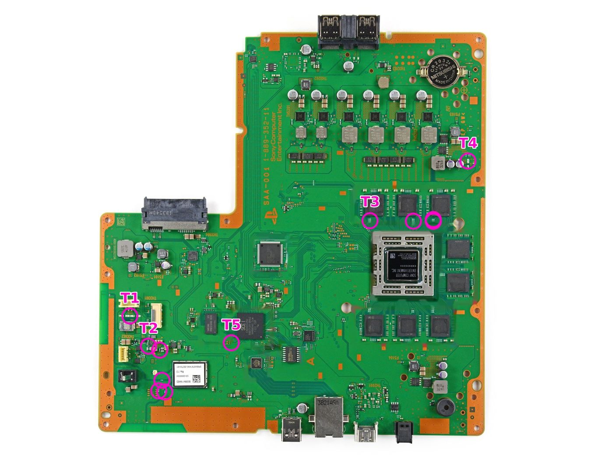<figcaption>Main-chip side (the side with the big Sony chip and the coin battery): T1–T5.</figcaption></figure>
  <ol class="shots">
    <li><input type="checkbox" id="s-T1"><div><label for="s-T1"><b>T1</b> beside the white connector at the left edge</label></div></li>
    <li><input type="checkbox" id="s-T2"><div><label for="s-T2"><b>T2</b> two groups by the Wi-Fi module: by its antenna socket, and above it</label></div></li>
    <li><input type="checkbox" id="s-T3"><div><label for="s-T3"><b>T3</b> the gap under the top row of memory chips</label></div></li>
    <li><input type="checkbox" id="s-T4"><div><label for="s-T4"><b>T4</b> right edge, beside the two small round capacitors</label></div></li>
    <li><input type="checkbox" id="s-T5"><div><label for="s-T5"><b>T5</b> just left of the chip marked “SCEI”</label></div></li>
  </ol>
  <div class="spots">
    <figure>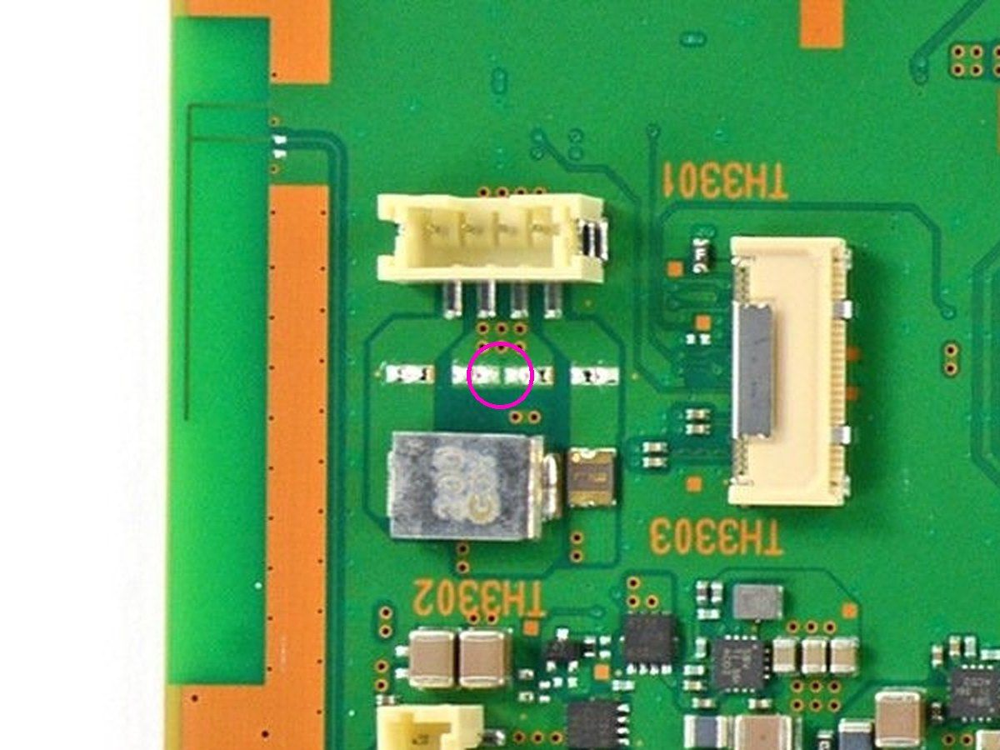<figcaption>T1</figcaption></figure>
    <figure>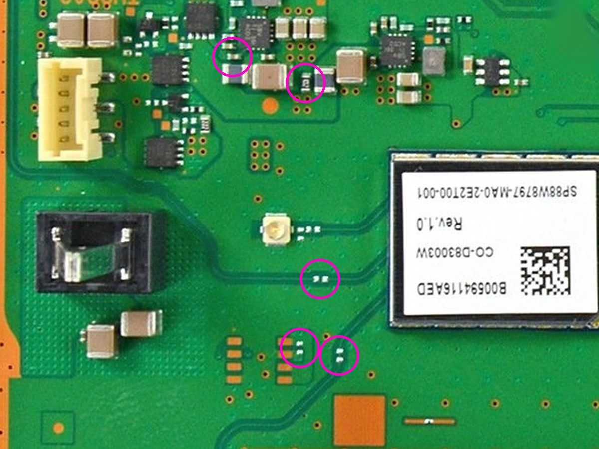<figcaption>T2</figcaption></figure>
    <figure>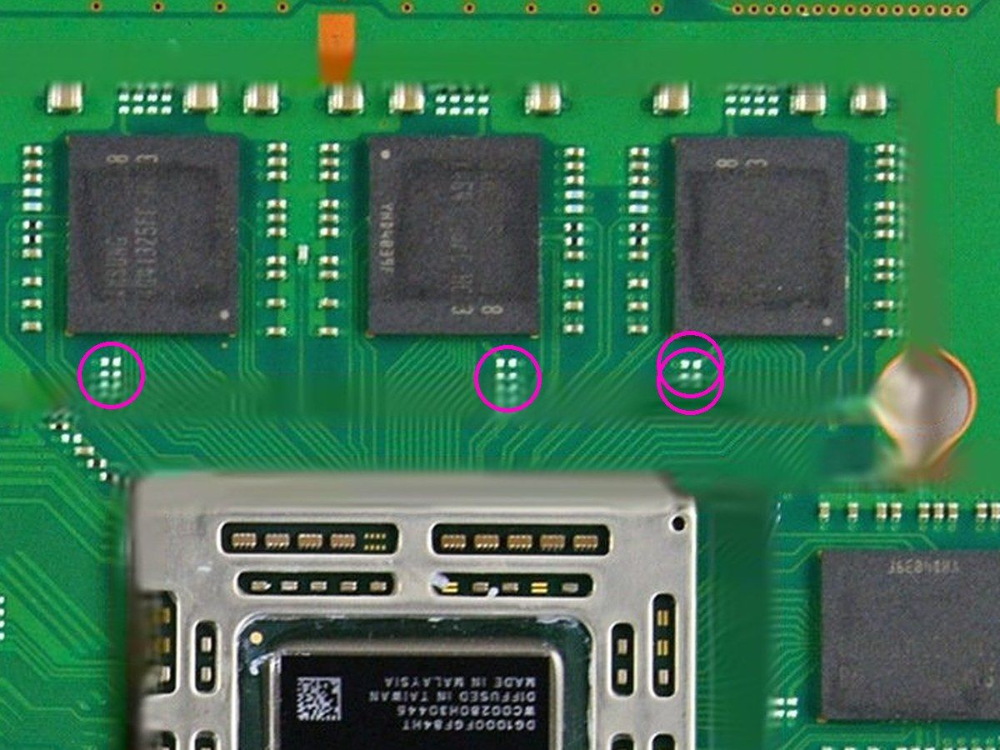<figcaption>T3</figcaption></figure>
    <figure>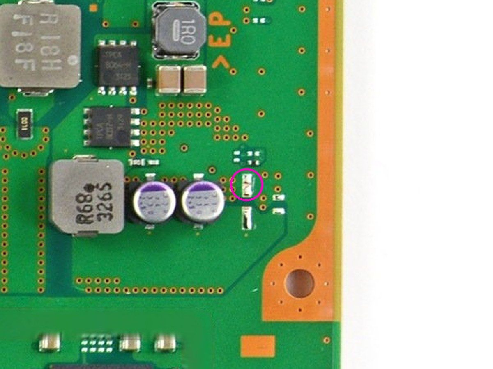<figcaption>T4</figcaption></figure>
    <figure>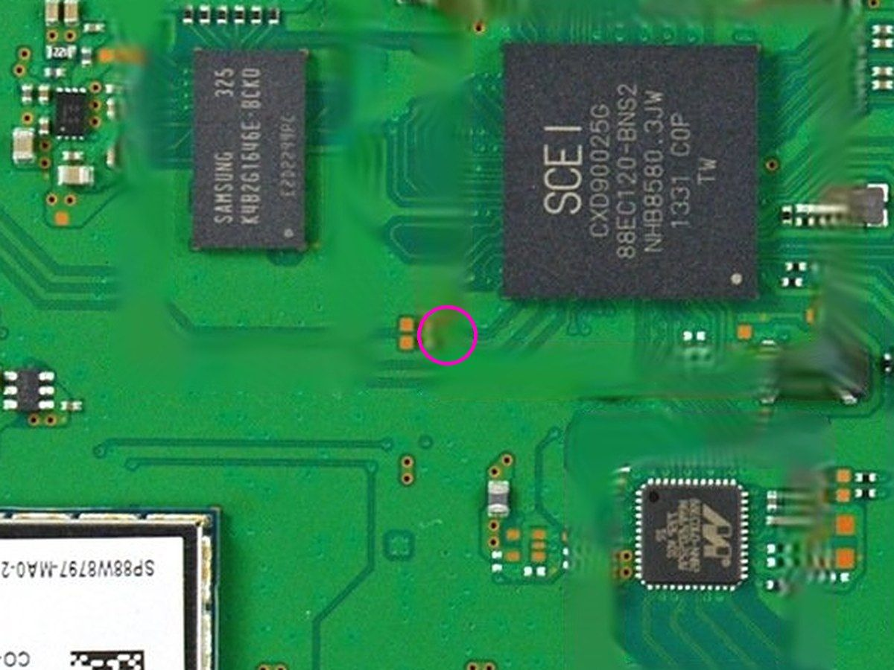<figcaption>T5 (blurry in the iFixit photo too)</figcaption></figure>
  </div>
  <figure>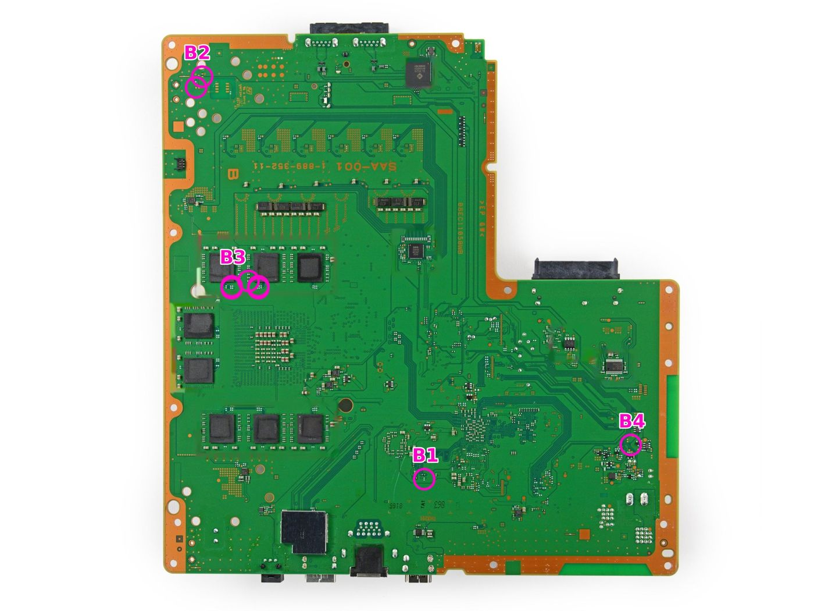<figcaption>Other side (big orange “B” and the board number printed mirrored): B1–B4.</figcaption></figure>
  <ol class="shots">
    <li><input type="checkbox" id="s-B1"><div><label for="s-B1"><b>B1</b> lower middle, above the small printed numbers</label></div></li>
    <li><input type="checkbox" id="s-B2"><div><label for="s-B2"><b>B2</b> top-left corner</label></div></li>
    <li><input type="checkbox" id="s-B3"><div><label for="s-B3"><b>B3</b> between the top-left memory chips; it's the back of T3</label></div></li>
    <li><input type="checkbox" id="s-B4"><div><label for="s-B4"><b>B4</b> right edge, lower part</label></div></li>
  </ol>
  <div class="spots">
    <figure>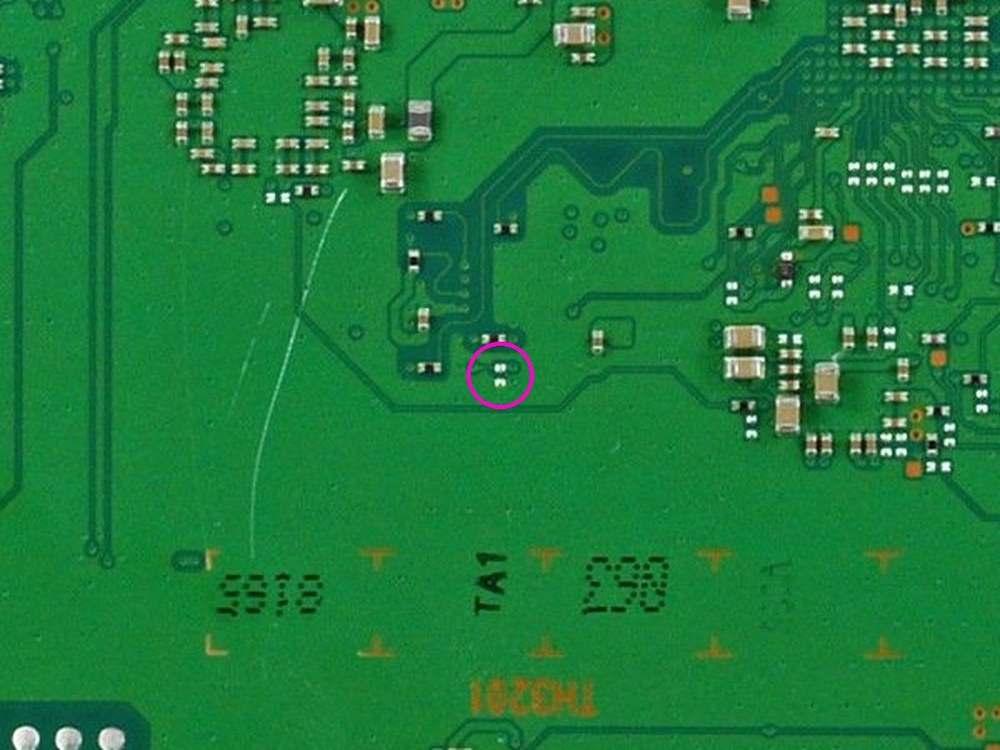<figcaption>B1</figcaption></figure>
    <figure>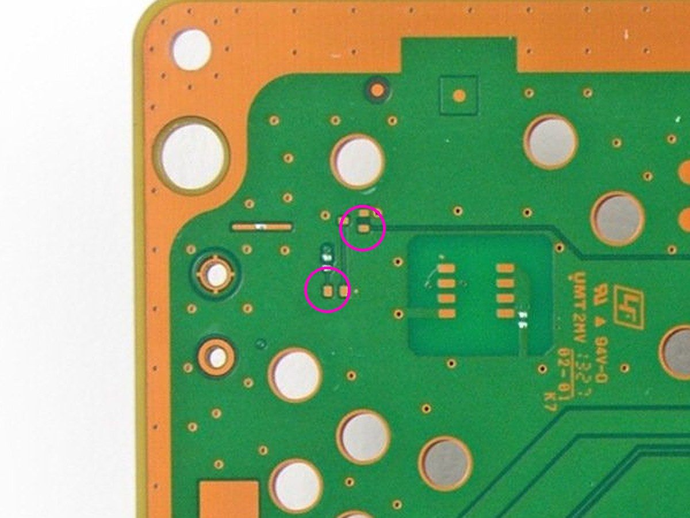<figcaption>B2</figcaption></figure>
    <figure>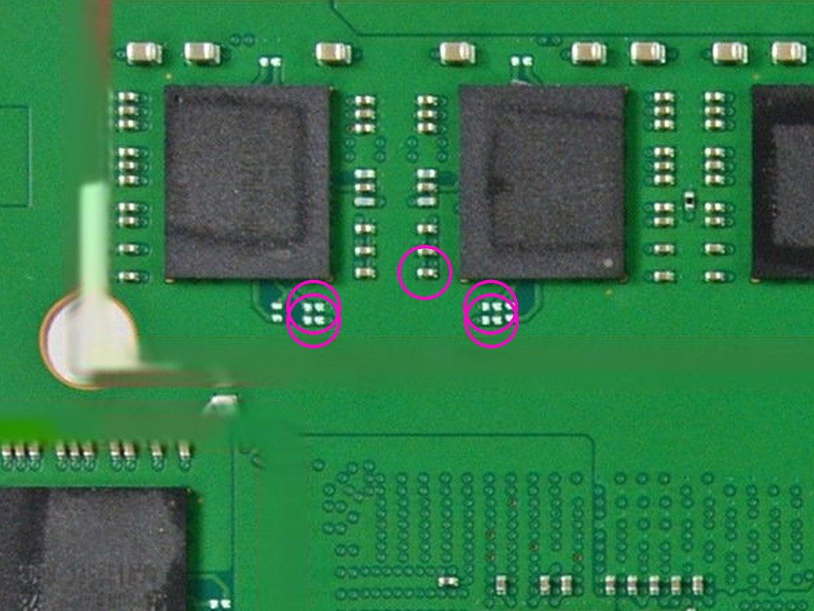<figcaption>B3</figcaption></figure>
    <figure>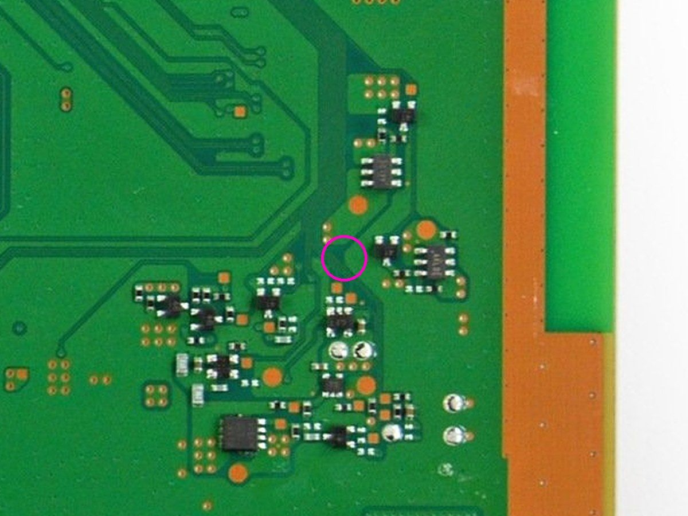<figcaption>B4</figcaption></figure>
  </div>
</section>

<section class="rules">
  <h3>After the shoot</h3>
  <p>Send everything with LocalSend and tell Claude “c1 teardown photos are in”. They get matched to the spots above and to the height question. The tracer model only changes where your photo clearly shows a part or bare pads.</p>
</section>
</main>

<script>
const K='c1-shots';let st={};try{st=JSON.parse(localStorage.getItem(K)||'{}')}catch(e){}
const boxes=[...document.querySelectorAll('ol.shots input[type=checkbox]')];
function upd(){const n=boxes.filter(b=>b.checked).length;document.getElementById('progress').textContent=n+' of '+boxes.length+' photos taken';
  boxes.forEach(b=>b.closest('li').classList.toggle('done',b.checked))}
boxes.forEach(b=>{b.checked=!!st[b.id];b.addEventListener('change',()=>{st[b.id]=b.checked;try{localStorage.setItem(K,JSON.stringify(st))}catch(e){}upd()})});
upd();
</script>
